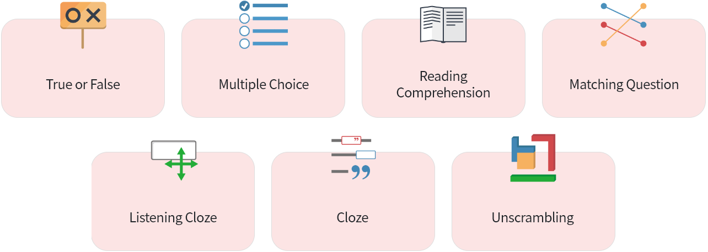

Using VR technology to create an immersive language learning experience
Dr. Yu-Ju Lan is a Research Chair Professor at the Department of Chinese as a Second Language at National Taiwan Normal University (NTNU). She is currently the Editor-in-Chief of Educational Technology & Society, the Associate Editor of Language Learning & Technology, and serves on the editorial board of Ampersand. She was also the president of the Taiwan Pedagogy and Practice in Technology-Enhanced Language Learning (TELL) Association.
Before serving at NTNU, Dr. Lan has taught in two different elementary schools in Taiwan for over 20 years. Her teaching experience has led her to develop multiple platforms that allow users to customize their learning plans to satisfy their learning needs. Her research interests include technology-enhanced foreign language learning, language learning in virtual worlds, mobile learning, and online synchronous teacher training.
Dr. Lan has devoted herself to 3D virtual reality (VR) research in language learning since 2009. Her contributions to VR language learning can be categorized into four aspects: (a) verifying learning theories in language-learning strategies and outcomes in VR contexts through empirical research; (b) building a theoretical framework for language learning through VR, based on her 10 years of research; (c) developing platforms and tools to support language learners aged 9 and above to build their 3D learning environments, which are based on her theoretical framework and reflections; and (d) putting research outcomes into practice and disseminating them to train and assist teachers in solving potential problems in language classes.
Dr. Lan has published nearly 50 SSCI journal papers and has proposed the principles of designing tasks and VR contexts based on empirical evidence. As the need to use VR in learning grows, her pioneering works could have major impacts on academia, education, and industry. For her outstanding research performance, she was awarded the Outstanding Research Award by the Ministry of Science and Technology (MOST) in Taiwan in 2022.
Omni-Immersion Vision (OIV): Development and evaluation of a virtual authoring tool
Omni-immersion vision (OIV), a 3D authoring tool in a virtual environment developed through Unity, is a language learning platform. After creating an avatar in OIV, learners can communicate with others via both voice- and text-based chat tools. OIV makes it easy for learners to tailor their own virtual environment according to their needs and interests. Just select real objects and scenarios designed from daily life in the toolbox and then place them in their virtual space. In OIV, people can work individually or collaboratively by sharing their innovative ideas using private virtual rooms or co-building scenarios and visiting others’ spaces.
Improving pragmatic skills in the workplace for adults with ASD through self-directed learning in VR
This project aims to develop pragmatic competence in youngsters with ASD (Autism spectrum disorder) by integrating two elements, procedural tasks and authentic contexts. A virtual Kanner Support Center was developed for Kanner youth in Second Life to strengthen their communication and social skills. All day-to-day situations, such as welcoming customers or serving meals, can be simulated by the virtual Kanner Support Center. At the virtual center, Kanner youths’ avatars stand at the front desk to greet customers and verbally guide them to (1) have their temperature taken and sign in (Figure 1), then (2) lead them to a table (Figure 2). Next, (3) the avatars take their orders, and finally (4) serve the ordered meals and complete payment for the meals. The results showed that youngsters with ASD learned pragmatic skills through self-directed practices in the virtual center.
-
Want to know more:
- Second life
NTNU’s language technology is integrated into teaching, making a solid debut
eMPOWER (e-Learning for Mandarin Proficiency of Words, Characters, and Sentences) is a platform that provides a highly efficient and interactive Mandarin teaching mode. It enables teachers to easily structure lessons and provides students with ample opportunities to practice Chinese reading, writing, speaking, and listening. With our adaptive learning modules, learners can practice Chinese language skills anytime, anywhere, and instantly check their learning outcomes by themselves. Currently, the users of eMPOWER have spanned across more than 15 countries in Asia, the United States and Europe.
Authoring Tools for Editing Teaching Material
Complete and flexible authoring tools allow language teachers to design their own courses with ease. The authoring tools include five sections: Warm up, Text, Characters & Words, Sentence Patterns, and Assessments. Teachers can customize teaching materials according to the needs of students with different Chinese language learning experiences.
Interactive Learning Technology
Writing: Many Mandarin Chinese learners are stuck or even give up learning Chinese because characters are too complicated to write and memorize. In view of this, eMPOWER offers stroke-writing and key-image mnemonics functions to solve the character learning problem. The stroke-writing function gives learners a complete learning process: learners can watch stroke-writing animations, do writing exercises, and receive feedback from eMPOWER. This process helps learners to improve the accuracy of writing Chinese characters and the memorization of the characters’ meaning. In addition, the developers of the key-image mnemonics system use pictures to present the features and definitions of Chinese characters. By watching the character development films, learners will construct mental representations of characters, which in turn can help them identify complex characters. On top of this, the Chinese character handwriting diagnosis and remedial instruction (CHDRI) can accurately judge the strokes and stroke order of more than 6,000 Chinese characters. Learners can practice writing characters according to the hints and guidance from CHDRI.
Speaking: eMPOWER uses the ASR (automatic speech recognition) system, which gives users immediate feedback. The correct speech recognition rate is as high as 87% when diagnosing learners' pronunciation. The system applies an authoring tool that gives teachers the flexibility to combine teaching materials and generate exercises easily. How is this accomplished? This is attributed to eMPOWER's database collection of almost 6000 characters, their pronunciations, and more than 18,000 words. The automatic speech recognition (ASR) system can make use of the database to diagnose students' pronunciation and immediately point out weaknesses in initials, finals, and tones. With the ASR system, learners can practice and correct pronunciation on their own.
Assessment: There are seven kinds of test items that can help track student performance. Teachers can efficiently create assessments or export online assessments as pdf files for use as paper-based tests.
